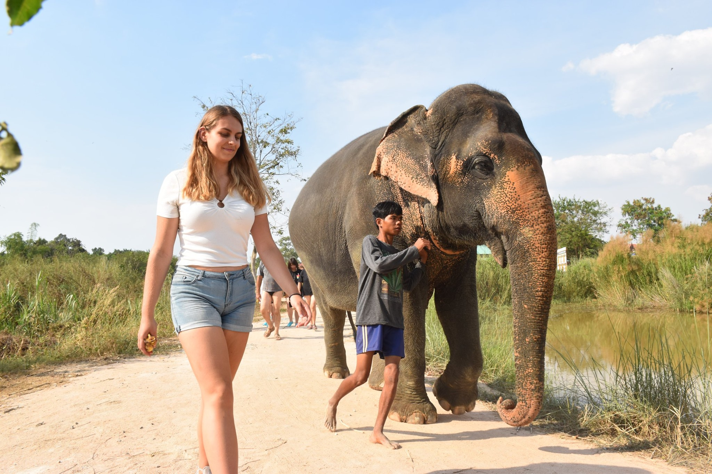
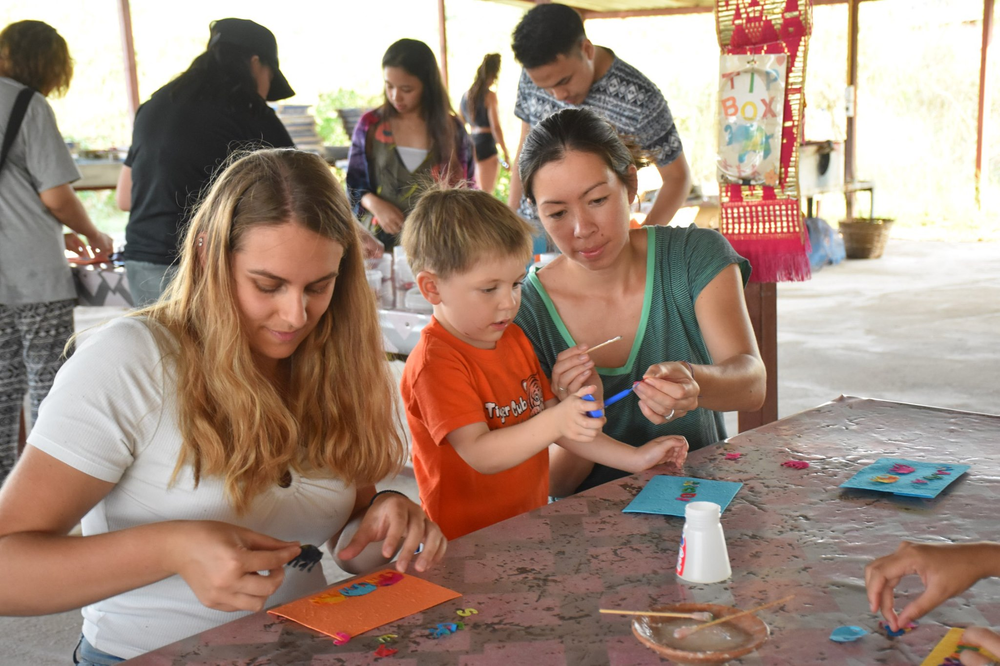
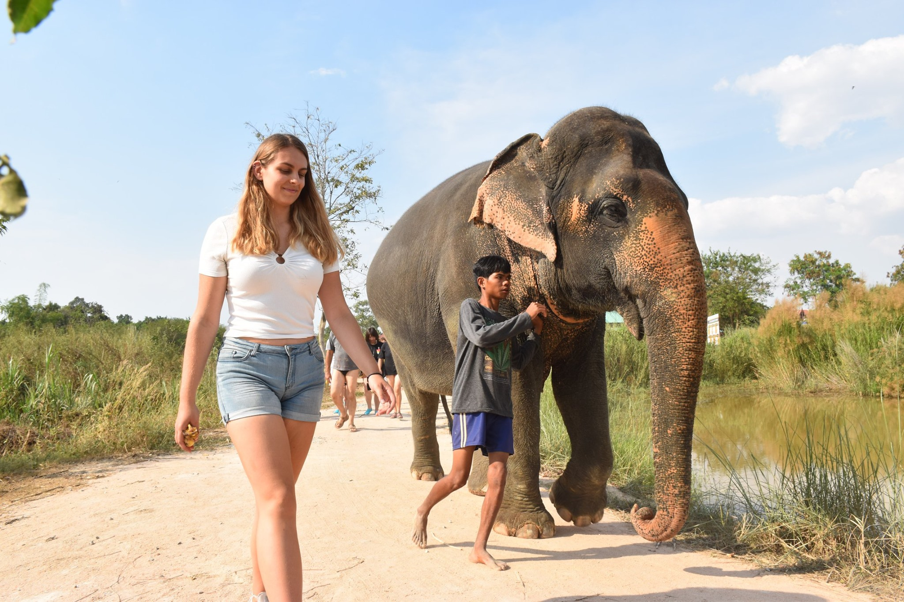
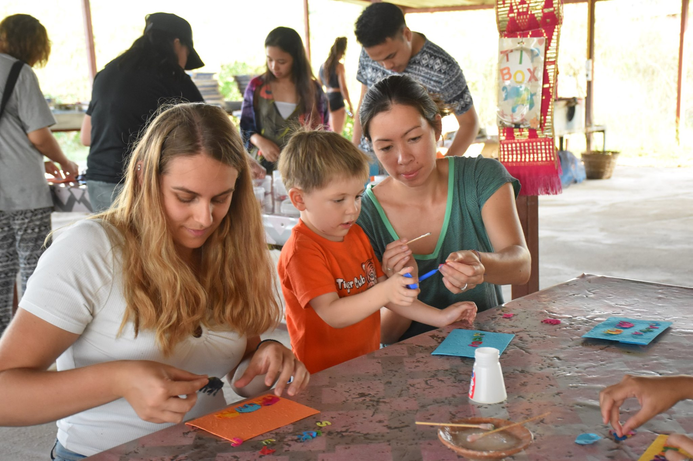

My absolute favorite trip was my 2019 solo trip to Thailand. This trip is of special importance to me because it was the first time I traveled alone and because it was entirely self-funded. The trip was almost 3 weeks long, and during that time I went to Bangkok, Papaya, and Krabi. In Krabi, I met two Indian friends who went island hopping with me to Koh Phi Phi and Koh Lanta. The highlight of the trip was my visit to the elephant sanctuary where we learned about elephant abuse, bathed and fed the elephants, and made paper and souvenirs from dried elephant dung.
 



Homepage -- Academic Journey -- Professional Experience & Training